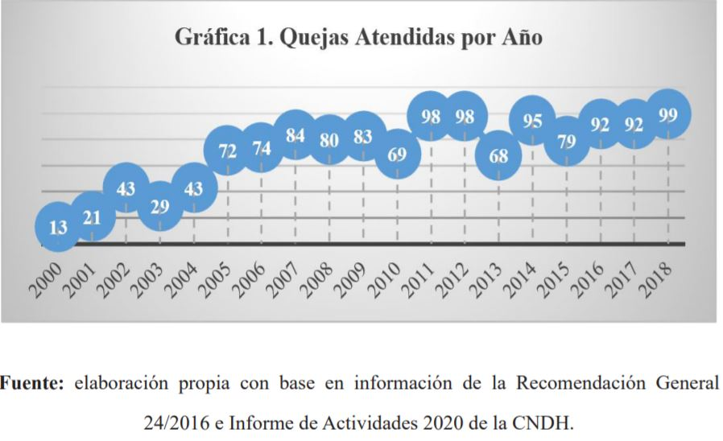

Introducción
El derecho humano a la libertad de expresión conlleva la posibilidad de expresar, recibir y difundir
opiniones, pensamientos e informaciones por cualquier medio posible, sin restricción o límites por parte de
Estado más que los derechos de terceros, la protección de la seguridad nacional,
el orden, la salud o la moral pública. Su tutela y garantía constituye un elemento indispensable en
cualquier Estado de derecho.
Desde hace algunos años, el Estado mexicano enfrenta una fuerte crisis en materia del respeto a los derechos
humanos de los periodistas y comunicadores. En este sentido, el papel que
*Corresponding author.
E-mail address: majo.ballesteros07@gmail.com (María José Bernal-Ballesteros)
Peer review is the responsibility of the Universidad Francisco de Paula Santander. This is an article under
the license CC BY 4.0
desempeñan las instituciones públicas es primordial, de ahí que se deban establecer líneas de acción claras,
políticas públicas y leyes que regulen y protejan los derechos y las libertades de los comunicadores y
periodistas. Si bien es cierto que existen distintas instituciones que conocen de los asuntos de violaciones
al derecho a la libertad de expresión, el presente trabajo de investigación pretende analizar el alcance de
esta situación que se vive frente a este derecho, única y exclusivamente frente a la actuación de la
Comisión Nacional de los Derechos Humanos.
La libertad de expresión como derecho humano
El derecho a la libertad de expresión constituye una prerrogativa de carácter fundamental que destaca, entre
otros derechos, por las dos dimensiones que supone; por un lado, en su vertiente social o política se
constituye como un elemento sine qua non para garantizar la vida democrática representativa de cualquier
Estado de derecho y, por otro lado, se encuentra la dimensión individual que permite asegurar a las personas
un espacio para desplegar su autonomía individual. Ambas dimensiones requieren necesariamente de una tutela
por parte del Estado, así como de un irrestricto respeto de los particulares (SCJN, 2014a y b).
La libertad de expresión y la libertad de prensa en México representan conquistas históricas, pues estuvieron
contempladas en la Constitución de Apatzingán de 1814, la cual estableció que nadie podría prohibir a ningún
ciudadano la libertad de hablar y manifestar sus opiniones mediante la imprenta. Posteriormente, en 1857 se
incorporaron libertades de imprenta y expresión. Benito Juárez, por su parte, defendió y promulgó la Ley
Orgánica de Prensa en 1868. Actualmente, los artículos 6º y 7º, de la Constitución Política de los Estados
Unidos Mexicanos, que si bien han sido reformados en diversas ocasiones, advierten sobre este derecho.
Asimismo, en el marco internacional la libertad de expresión es un derecho que se encuentra regulado
en instrumentos universales e interamericanos, los cuales concuerdan en que esta libertad comprende el
derecho de manifestar por cualquier medio de expresión, y sin limitación de fronteras, ideas e información.
Por cuanto hace a su normatividad, destacan los artículos 19 y 20 de la Declaración Universal de Derechos
Humanos, IV y XXI de la Declaración Americana de los Derechos y Deberes del Hombre; artículos 19 y 21 del
Pacto Internacional de Derechos Civiles y Políticos, y los artículos 13 y 15 de la Convención Americana
sobre Derechos Humanos.
Por su parte, el Comité Internacional de Derechos Humanos (CIDH) y la Corte Interamericana de Derechos
Humanos (Corte IDH) coindicen en que la libertad de información y de expresión son una piedra angular de las
sociedades libres y democráticas, siendo ésta una condición esencial para que las sociedades estén
suficientemente informadas (Corte IDH, 2001, párr. 68).
Ahora bien, la libertad de expresión comprende no sólo el derecho a difundir información e ideas, sino
también la libertad de investigación y el derecho a recibir información y opiniones. Con frecuencia, la
libertad de expresión se asocia con la libertad de pensamiento, mientras que la libertad de reunión se
entiende vinculada con la libertad de asociación. Sin embargo, se considera más conveniente incluir en el
derecho de la libertad de expresión a la libertad de reunión (Naciones Unidas de Derechos Humanos y Tribunal
de Justicia del Distrito Federal, 2013, p. 701).
Al respecto, la Corte Interamericana refiere que: “la expresión y la difusión del pensamiento son
indivisibles, por lo que para garantizar efectivamente el derecho a la libertad de pensamiento y de
expresión, el estado no puede limitar indebidamente el derecho a difundir las ideas y opiniones” (Corte IDH,
2005, párr. 72) No obstante, este tribunal interamericano también ha considerado importante señalar que el
ejercicio de la libertad de expresión no es un derecho absoluto; en este sentido, plantea la posibilidad de
que
los estados establezcan restricciones a esta libertad a través de la aplicación de responsabilidades
ulteriores por el ejercicio abusivo de este derecho. Por lo que es importante remarcar que estas
restricciones deben tener “carácter excepcional y no deben limitar, mas allá de lo estrictamente necesario,
el pleno ejercicio de la libertad de expresión y convertirse en un mecanismo directo o indirecto de censura
previa” (Corte IDH, 2005, párr. 54).
Sin embargo, con toda esta regulación normativa que, teóricamente, debiera suponer una tutela al ejercicio de
esta libertad, lo cierto es que existe una grave y lamentable problemática a la que los periodistas y
comunicadores se enfrentan cotidianamente, pues llevar a cabo sus labores, supone, hoy más que nunca, poner
en riesgo su vida y su integridad. En México, la censura así como las agresiones y el hostigamiento han
estado siempre presentes al grado de que nuestro país, según la revista Forbes, ocupó el cuarto lugar a
nivel internacional como el más peligroso para el ejercicio del periodismo, superado sólo por Afganistán,
Siria y la India (Forbes, 2018). Por lo que contar con mecanismos efectivos de tutela es indispensable para
disminuir las cifras que actualmente reflejan esta realidad.
En la siguiente gráfica se muestra un incremento en el número de quejas atendidas en el periodo que va del
2000 al 2018, como se observa, si bien en 2015 hubo una disminución de quejas, de 2016 a 2018 éstas se han
incrementado considerablemente. En el 2018, según datos del Programa de Agravios a Periodistas y Defensores
Civiles de Derechos Humanos, del 1 de enero al 20 de diciembre de 2018 se radicaron 160 expedientes, de los
cuales 99 casos corresponden a actos cometidos en perjuicio de periodistas.

Otra evidencia más respecto de esta grave problemática es que en el periodo de 2000 al 20 de diciembre de
2018, la CNDH, en el marco del Programa de Agravios a Periodistas y Defensores Civiles de Derechos Humanos,
ha registrado un total de 141 homicidios de periodistas, de los cuales 15 casos corresponden a mujeres, lo
que equivale al 10.6 por ciento. (CNDH, 2020) Desde 2003, 24 profesionales de la comunicación permanecen
desaparecidos en México. El último caso es el de Agustín Silva, desaparecido el 22 de enero de 2018 en
Oaxaca (ARTICLE 19, 2018).
Asimismo, sobre la violencia a periodistas, ARTICLE 19 (2020) documentó 406 agresiones contra periodistas y
medios de comunicación de enero a junio. Esto representa un incremento del 45%, en comparación con las 280
agresiones documentadas durante el mismo periodo en 2019. Como comparativo, este primer semestre de 2020 ya
superó el total de agresiones documentadas en todo 2015. Es evidente, por tanto que la violencia hacia
periodistas y comunicadores ha incrementado de forma exponencial, durante el primer semestre del 2020 se
estima que cada 10.75 horas ocurrió al menos una agresión. Las amenazas, intimidaciones y hostigamientos,
así como los bloqueos informativos y alteraciones de contenidos fueron los principales daños que sufrieron
las personas dedicadas a esta labor. Los estados que encabezan la lista agresiones en la república mexicana
son Ciudad de México, Puebla, Oaxaca, Veracruz y Quintana Roo. Dichas entidades concentran el 48% de las
agresiones totales, es decir, casi la mitad del total.
Como se advierte nos encontramos ante una situación crítica que merece ser analizada. La CNDH es la
institución mexicana encargada de recomendar a las autoridades el establecimiento de las medidas necesarias
para evitar violaciones a los derechos humanos. Por ello, en los subsecuente apartados se analizarán las
recomendaciones generales que ha dictado dicho organismo nacional en materia de la libertad de expresión
para poder delinear claramente los límites que tienen las autoridades mexicanas, así como los particulares
en relación con este derecho.
El derecho a la libertad de expresión en el sistema no jurisdiccional
La naturaleza que distingue a los derechos humanos de cualquier otro tipo de derechos hace que su tutela y
garantía se sitúen como una línea prioritaria en la conformación de los sistemas jurídicos y de gobierno;
llevar a cabo modificaciones que aseguren el ejercicio pleno de estos mínimos vitales se traducen en el
cumplimento de las obligaciones que actualmente tienen en materia de derechos humanos todas las autoridades.
A partir de la reforma del 10 de junio de 2011 el Estado mexicano cuenta hoy con un texto constitucional en
donde claramente se estipulan los principios y las obligaciones que se tienen en esta materia. En este
sentido, el artículo 1 de la Constitución Política de los Estados Unidos Mexicanos refiere que: “todas las
autoridades en el ámbito de sus competencias, tienen la obligación de, promover, respetar, proteger y
garantizar los derechos humanos de conformidad con los principios de universalidad, interdependencia,
indivisibilidad y progresividad”. En consecuencia, el Estado deberá prevenir, investigar, sancionar y
reparar las violaciones a los derechos humanos en los términos que establezca la ley.
Del texto anterior se destaca que actualmente en cualquier Estado de derecho, las autoridades deben de
ajustar las actuaciones a estos estándares y principios que permiten vivenciar estos derechos y
libertades fundamentales. Aun cuando sabemos que es el Estado el primer responsable de esta tutela, es
importante destacar que tal como lo ha advertido la Suprema Corte de Justicia de la Nación (SCJN), el
respeto a los derechos humanos constituye también un límite a la autonomía de la voluntad y son por tanto
oponibles a particulares en un plano de horizontalidad (Carbonell, 2016).
Con esta acotación podemos dejar en claro que, tanto el derecho a la libertad de expresión como cualquier
otro derecho fundamental deben ser respetados y garantizados, tanto por las autoridades como por los
particulares; para lo cual cada Estado debe crear y poner a disposición de sus gobernados una serie de
mecanismos que garanticen su protección.
Tanto en México, como en otras partes del mundo, existen mecanismos de protección a los derechos humanos que
pueden ser clasificados en dos rubros: jurisdiccionales y no jurisdiccionales (Bernal Ballesteros, 2015).
Por cuanto hace a la vía jurisdiccional en el Estado mexicano destaca por excelencia el juicio de amparo, que
de acuerdo con Ignacio Burgoa, se define como “un proceso que se inicia por la acción que ejercita cualquier
gobernado ante los órganos jurisdiccionales federales contra todo acto de autoridad (lato sensu) que le
causan un agravio en su esfera jurídica y que considere contrario a la Constitución…” (Burgoa, 2006, p.
177).
Por otra parte la acción de inconstitucionalidad, siendo un procedimiento jurisdiccional, “propende a
reforzar el respeto que el legislador debe rendirle a la Ley de Leyes. Mediante una sentencia estimatoria,
esto es, que declare la invalidez general de una norma contraria a la Constitución Política” (Brage
Camazano, 1998, pp. 57-58).
En la vía no jurisdiccional destacan los procedimientos que se siguen a través de las comisiones de derechos
humanos o mejor conocidas
como las instituciones de tipo ombudsperson que existen en gran parte de los países democráticos, y cuya
principal función consiste en supervisar la administración pública y en ser un contrapeso de los poderes.
El ombudsperson en México es un organismo constitucionalmente autónomo que está facultado para iniciar o dar
seguimiento a quejas por presuntas violaciones a derechos humanos emanadas de un acto de autoridad, estando
impedidas para conocer asuntos en materia electoral, jurisdiccional o que se susciten entre particulares
(CNDH, 2018).
A diferencia de los procesos en la vía jurisdiccional, las quejas que se tramitan en estos organismos son
flexibles y de buena fe, pueden iniciar a instancia de parte, o bien, de manera oficiosa cuando las
comisiones tengan conocimiento de hechos que se presuman como violaciones a derechos humanos. Una de las
maneras en las que puede concluir el procedimiento de queja es mediante la emisión de una Recomendación que
va dirigida al superior jerárquico o titular de la dependencia, o bien, a la autoridad responsable, y en
cuyos puntos resolutivos, el ombudsperson establece una serie de acciones a implementar por parte de las
autoridades.
Por su parte, las recomendaciones generales pueden ser emitidas por estos organismos cuando se detecte una
problemática general que conlleve violaciones a derechos humanos por parte del sistema o de un conjunto de
dependencias o autoridades; lo que se busca con estos documentos es generar un cambio legislativo,
estructural, de políticas públicas o de prevención sobre ciertas temáticas claramente establecidas. A través
de dichas recomendaciones, el ombudsperson tiene un amplio margen de acción para poder diseñar y exigir el
cumplimiento de estrategias para garantizar el respeto a los derechos humanos.
Hasta la fecha la Comisión Nacional de Derechos Humanos ha emitido cuatro recomendaciones generales en
materia de la tutela del derecho humano
a la libertad de expresión en las que se basa el presente artículo de investigación. Lo que se pretende en
este sentido es delimitar hasta qué punto el ombudsperson ha impactado en el Estado mexicano en la tutela de
esta libertad fundamental. En el análisis de dichos documentos se analizarán las recomendaciones hechas a
las autoridades mexicanas y se valorará el avance que se pueda o no tener en este sentido.
Recomendación General No. 7 Sobre las violaciones a la libertad de expresión de periodistas
o comunicadores
La Recomendación General No. 7 Sobre las violaciones a la libertad de expresión de periodistas o
comunicadores, emitida el 9 de agosto de 2004 (CNDH, 2004), es la primera recomendación general donde se
plantea cómo una problemática generalizada en el Estado mexicano ––tanto en el ámbito federal, estatal y
municipal–– vulnera los derechos de los periodistas y comunicadores. Dichos actos fueron considerados como
una violación a los artículos 6º y 7º de la Constitución Política de los Estados Unidos Mexicanos, los
cuales señalan que la manifestación de ideas no será objeto de ninguna inquisición judicial o
administrativa. Aunado a ello, se considera contrario a lo señalado en el artículo 13 de la Convención
Americana sobre Derechos Humanos; el artículo 19 de la Declaración Universal; el IV de la Declaración
Americana de los Derechos y Deberes de Hombre; y el artículo 19 del Pacto Internacional de Derechos Civiles
y Políticos.
De igual manera, la CNDH destacó el contenido del artículo 8 de la Declaración de Principio sobre la Libertad
de Expresión que señala, entre otras cosas, que “todo comunicador social tiene derecho a la reserva de sus
fuentes de información, apuntes y archivos profesionales”, por ser ésta una situación indispensable para
llevar a cabo su labor periodística.
En este documento, la CNDH observa dos problemáticas, por un lado, la falta de fundamentación y motivación de
los ministerios públicos con la que se requiere o citan a los comunicadores y periodistas.
Hecho que de igual manera atenta contra el derecho a la legalidad y seguridad jurídica, pues cualquier
autoridad
federal, estatal o municipal se debe constreñir al marco jurídico que les rige.
Por otra parte, la Comisión Nacional de Derechos Humanos observó que diversas autoridades vinculadas con el
área de procuración de justicia hacen comparecer a comunicadores y periodistas, y se les solicita que
revelen sus fuentes de información, lo cual evidentemente vulnera el derecho a la libertad de expresión. Si
bien, la CNDH reconoce las facultades de investigación de la autoridad ministerial, destaca la importancia
de delimitar los criterios que pueden utilizar para citar a periodistas.
Sin que sea admisible que la facultad persecutoria de los delitos puedan ejercerse sin límite alguno, o que
el Estado pueda valerse de cualquier procedimiento para alcanzar sus objetivos. Por tanto la posibilidad de
que un periodista se reserve el origen de una información determinada; también es un presupuesto del derecho
a la libertad expresión, así como de la integridad y el ejercicio libre de su profesión o actividad por la
que haya tenido acceso a dicha información (CNDH, 2018, p. 5).
En este sentido, la CNDH destaca que el tema de la libertad de expresión y de prensa constituye un tema de
gran relevancia en el Estado mexicano y que este derecho debe incluir el no ser molestado a causa de sus
opiniones, el de investigar y recibir opiniones y el de difundirlas sin limitación de fronteras por
cualquier medio de expresión. Aunado a ello, resalta el deber jurídico del estado de prevenir actos que
violenten los derechos de periodistas y comunicadores, así como la obligación que tiene de adoptar las
medidas necesarias.
Recomendación General 17 Sobre los casos de agresiones a periodistas y la impunidad
prevaleciente
En este documento recomendatorio, la CNDH emite una serie de observaciones de las cuales se desprende que
diversas autoridades procuradoras de justicia del Estado mexicano han vulnerado en prejuicio de
comunicadores y periodistas, los derechos fundamentales a la vida, a la integridad y seguridad personal y a
la seguridad jurídica, así como a la libertad de expresión.
Destaca que una de las problemáticas más graves son los homicidios, desapariciones forzadas, lesiones,
amenazas e intimidación de las que son objeto los periodistas en el ejercicio de su labor informativa.
Resalta, de igual manera, la insuficiente labor de las autoridades de investigación para esclarecer dichos
actos delictivos, siendo la impunidad uno de los principales retos que enfrenta actualmente el Estado
mexicano.
El alto grado de impunidad que se vive en el país ha generado que, tanto en los casos de agresiones a
periodistas como de muchos otros sectores vulnerables, se fortalezca un ambiente permisivo y que dichas
agresiones sean cada vez más violentas. En este sentido, resulta lamentable que de las denuncias que se
hacen a la Fiscalía solo un mínimo porcentaje llegue a una sentencia condenatoria.
La Corte IDH refirió que la impunidad
institucionalizada se constituye por:
La falta en su conjunto de investigaciones, persecución y condena de los responsables de las violaciones de
los derechos humanos protegidos por la Convención Americana, toda vez que el estado tiene la obligación de
combatir tal situación por todos los medios legales disponibles ya que la impunidad propicia la repetición
crónica de las violaciones de derechos humanos y la total indefensión de las víctimas y de sus familiares
(Corte IDH, 2011, párr. 186).
De la mano con esta impunidad resalta la dilación y omisión procesal por parte de la autoridad ministerial,
que en muchos de los casos, omite llevar a cabo todas las diligencias necesarias para agotar la línea de
investigación procedentes. Así como del estudio de las quejas analizadas por la CNDH no se acreditó que se
haya realizado una investigación respecto del entorno laboral o periodístico o de los indicios que surgieron
de la propia investigación.
Por último, la CNDH concluye que la falta de resultados en estas investigaciones de violaciones a los
derechos humanos de los periodistas y comunicadores se debe principalmente a tres causas: “a) los
prolongados periodos de inactividad en que incurren las autoridades ministeriales…; b) la dilación que se
presenta cuando se determina la sustitución de los fiscales o agentes del Ministerio Público que iniciaron
la investigación...; c) aquellos casos en los que las procuradurías de algún estado determinan remitir el
caso a la Procuraduría General de la República, por considerar que puede existir conexidad con un delito del
orden federal… lo que puede llevar a inactividad o incluso a que no se determine la averiguación previa”
(CNDH, 2018, pp. 16 y 17).
Esta omisión del Estado respecto de su obligación de garantizar la vida, integridad y justicia a los ataques
contra los comunicadores trae como consecuencia una afectación a la cultura de denuncia; lo cual permite que
se genere un clima de amedrentamiento y zozobra en contra del libre ejercicio de los comunicadores; que se
recurra a la autocensura de los periodistas o medios de comunicación para evitar convertirse en víctimas de
venganza y represión; así como un deterioro en la vida democrática, al privar a la ciudadanía de información
completa, confiable y oportuna.
Recomendación General 20 Sobre agravios a periodistas en México y la impunidad imperante
De acuerdo con la CNDH, son diversos los actores que cometen agresiones en contra del gremio
en cuestión; sin embargo, son las autoridades las encargadas de procurar la justicia; quienes al no cumplir
con su obligación de practicar las diligencias en las indagatorias correspondientes, para lograr el
esclarecimiento de los hechos, prolongando además el tiempo para su integración, sin determinación alguna,
derivan en la constitución de actos que vulneran los derechos humanos a la vida, a la integridad y seguridad
personal, a la seguridad jurídica y, en consecuencia, a la libertad de expresión.
La censura es el límite que existe para que la información llegue a su destino, en forma de supresión o
restringiendo su circulación. En el pasado, esta práctica era desarrollada de forma directa hacia el sector
periodístico; sin embargo, en la actualidad los “mecanismos indirectos” son nuevas formas con las que se
pretende intimidar a las personas dedicadas a esta labor, definiendo estos métodos como actos que buscan
privar su ejercicio. De acuerdo con la CNDH, incurren en estas prácticas agentes del poder público, tanto
federales como locales, quienes por medios legítimos discrecionales o abusivos pretenden sancionar las
declaraciones hechas por periodistas o personas en general.
La protección de la identidad de las personas que son proveedoras de información no es limitada, ya que el
periodista tendrá el derecho a negarse frente a terceros, su propia empresa e inclusive autoridades públicas
o judiciales. La CNDH ha hecho hincapié en que los profesionales de la información no deberían ser citados
por jueces o en algún tribunal, sin una verdadera causa justificada, ya que este tipo de acciones sin lugar
a dudas tiene como consecuencia privar su actividad; las demandas judiciales, el hostigamiento policial, las
legislaciones restrictivas o el boicot de la información a ciertos medios de comunicación, constituyen
también “mecanismos indirectos” ejecutados en contra de periodistas, cuya finalidad sigue siendo la
represión en el ejercicio de su profesión.
En conclusión, la CNDH demuestra que “cada ataque o agresión en prejuicio de un comunicador
se constituye en un atentado en detrimento de la vida democrática del país, pues atenta en prejuicio del
derecho colectivo a la información” (CNDH, 2016); agravando aún más la situación derivado de la imperante
impunidad que se vive en México en contra del gremio periodístico.
Recomendación General 24 Sobre el ejercicio de la libertad de expresión en México
La última de las recomendaciones generales emitidas por la CNDH vinculada al ejercicio de la labor
periodística en México se basa en “la libertad de expresión, (que) en todas sus formas y manifestaciones, es
un derecho fundamental e inalienable, inherente a todas las personas. Es, además, un requisito indispensable
para la existencia misma de una sociedad democrática” (CIDH, 2000).
Pasaron tres años desde la última ocasión en la que el máximo organismo protector de los derechos humanos en
México habría recomendado la procuración máxima de justicia hacia los profesionales de esta noble labor; sin
embargo, a pesar de estar regulado en la misma Constitución Política y sancionado por la ley como un delito,
la libertad de expresión seguía siendo coartada; en 2012 se promulgó la “Ley para la Protección de Personas
Defensoras de Derechos Humanos y Periodistas”. En este sentido, se definirían como periodistas:
Las personas físicas, así como medios de comunicación y difusión públicos, comunitarios, privados,
independientes, universitarios, experimentales o de cualquier otra índole cuyo trabajo consiste en recabar,
generar, procesar, editar, comentar, opinar, difundir, publicar o proveer información, a través de cualquier
medio de difusión y comunicación que puede ser impreso, radioeléctrico, digital o imagen (DOF, 2012).
A través del presente documento, la CNDH tiene como uno de sus principales objetivos referir a las
autoridades recomendadas la reciente Ley, promulgada a favor de las personas defensoras de
derechos humanos y periodistas de México, que de la mano con otras leyes vigentes en nuestro país, pretenden
que las indagatorias que estén siendo integradas respecto de hechos relacionados a agresiones en contra del
gremio periodístico sean llevadas a cabo con irrestricto apego a la ley, sin dejar de lado los hechos
relacionados al derecho a la libertad de expresión.
Lo anterior en materia de procuración de justicia; sin embargo, el Estado mexicano tiene un compromiso mayor
con la sociedad mexicana para garantizar un pleno derecho a la libertad de expresión, ya que son los tres
órdenes de gobierno los que, de acuerdo a la CNDH, deberán trabajar en coordinación con el personal a su
cargo, capacitándolos con herramientas que les permitan realizar sus labores con estricto apego a los
derechos humanos, y en este sentido, dotarles de conocimientos relacionados a la libertad de expresión a
quienes en virtud de sus funciones tuvieren que tener contacto frecuente con periodistas o comunicadores.
En el Estado mexicano se vive actualmente una crisis en materia de derechos humanos, pues permean diversas
problemáticas, tales como la violencia de la que son objeto periodistas y comunicadores. Si bien es cierto
que se puede advertir un cierto avance en la legislación en materia de tutela de los derechos humanos de
este gremio, la mayoría de los estados no cuenta con una normativa específica en la materia.
Resulta indispensable implementar políticas públicas y estrategias tendentes a garantizar el libre ejercicio
de las actividades para proteger a este gremio, así como a la sociedad en general, pues como se advirtió en
este artículo, el derecho a la información y a la libertad expresión son la piedra angular de las sociedades
libres, democráticas e informadas.
Aunado a ello, es urgente una reestructuración normativa en las fiscalías, ya que el mal manejo de las
investigaciones de los asuntos de violencia en
contra de los periodistas, en su mayoría, no llega a una sentencia o al final de la investigación. En este
sentido, es necesaria una reforma judicial y administrativa que permita disminuir la impunidad.
Con el análisis de las recomendaciones emitidas por la CNDH que se planteó en esta investigación se concluye
que este organismo defensor de los derechos humanos advierte que aunado al alto índice de agresiones en
contra de periodistas y profesionales de la comunicación, subsisten circunstancias que inciden en los altos
niveles de inseguridad e incrementan las condiciones de riesgo que enfrenta este gremio, entre ellas
destacan: los vacíos legales o la subsistencia de tipos penales que son empleados para criminalizar u
obstaculizar su labor; la falta de mecanismos y acciones en las entidades federativas para prevenir,
proteger e investigar las agresiones en su contra; así como la falta de coordinación entre las fiscalías y
procuradurías locales con la Fiscalía General de la República para la investigación de delitos cometidos en
agravio de este grupo en situación de riesgo, lo que además de duplicar las actuaciones, impide a las
víctimas directas o indirectas tener certeza respecto a la autoridad a la que deben acudir; la falta de
fiscalías especializadas representa del mismo modo un grave problema paradar celeridad y certeza jurídica a
los afectados; la impunidad y la falta de cultura de la denuncia, y finalmente, la nula existencia de
protocolos de investigación que en muchos casos obstaculiza el acceso a la justicia de periodistas.
De lo anterior se puede advertir que la realidad que se vive en el Estado mexicano para los periodistas y
comunicadores es cruda, que aún falta mucho trabajo por hacer tanto de la sociedad civil como de los
gobiernos y los legisladores. Claramente tenemos una deuda pendiente con este grupo en situación de
vulnerabilidad que día con día arriesga su vida para fortalecer nuestro Estado de derecho a través del
acceso a la información. Por ello, es necesario seguir atendiendo los puntos recomendatorios de las
recomendaciones emitidas por la CNDH, así como implementar las políticas públicas necesarias
para garantizar el derecho humanos a la libertad de expresión en México.
References
ARTICLE 19 (2020). Primer semestre de 2020: crecen exponencialmente las agresiones contra la prensa y
continúan los asesinatos. abril de 2021, de Article 19, sitio web:
https://articulo19.org/primer-semestre-de-2020-crecen-exponencialmente-las-agresiones-contra-la-prensa-y-continuan-los-asesinatos/
––––––––––– (2018). Periodistas desararecidos en México, 23 de enero de 2018,
https://articulo19.org/periodistasdesaparecidos/, consultado en abril de 2021.
Bernal Ballesteros M. J. (2015). Luces y sobras del Ombudsperson, Un estudio comparado entre México y España.
Toluca: Comisión de Derechos Humanos del Estado de México-Universidad de Santiago de Compostela.
Burgoa, I. (2006). El juicio de Amparo. México: Porrúa.
Carbonell, M. y Caballero González, E. C. G. (2016). La Constitución interpretada. México: Centro de Estudios
Jurídicos Carbonell.
CIDH (Comisión Interamericana de Derechos Humanos) (2000). Declaración de Principios sobre Libertad de
Expresión. 108° periodo ordinario de sesiones. Recuperado de https://cutt.ly/WbEFGZo
CNDH (Comisión Nacional de los Derechos Humanos) (2020). Informe de Actividades 2020. Recuperado de
http://informe.cndh.org.mx/menu.aspx?id=40063
––––––––––– (2018). Recomendación General No. 17 Sobre los casos de agresiones a periodistas y la impunidad
prevaleciente. 19 de agosto.
Recuperado de https://cutt.ly/YbESJ0P
––––––––––– (2016). Recomendación General No. 24 Sobre el ejercicio de la libertad de expresión en México.
Recuperado de https://cutt.ly/pbES7nz
––––––––––– (2013). Recomendación General No. 20 sobre el agravio a periodistas en México y la impunidad
imperante. Recuperado de https:// cutt.ly/dbEDoHo
––––––––––– (2004). Recomendación General No.7 sobre las violaciones a la libertad de expresión de
periodistas o comunicadores. Recuperado de https://cutt.ly/PbEDmQS
––––––––––– (1992). Ley de la Comisión Nacional de Derechos Humanos. México: CNDH.
Corte IDH (Corte Interamericana de Derechos Humanos) (2011), Caso “Ivcher Bronstein”, sentencia del 6 de febrero
de 2011, serie C no. 74.
––––––––––– (2008). Caso Kimel vs. Argentina, Fondo, Reparaciones y Costas, sentencia del 2 de mayo.
––––––––––– (2005). Caso Palamara Iribarne vs. Chile, Fondo, Reparaciones y Costas, sentencia del 22 de
noviembre.
––––––––––– (2001), Caso “La última tentación de Cristo” (Olmedo Bustos y otros) vs. Chile, Fondo,
Reparaciones y Costas, sentencia del 5 de febrero.
DOF (Diario Oficial de la Federación) (2012, 25 de junio). Ley para la Protección de Personas Defensoras de
Derechos Humanos y Periodistas. de 2012. México: Secretaría de Gobernación.
Gonza, A. y García Ramírez, S. (2007). La libertad de expresión en la jurisprudencia de la Corte
Interamericana de Derechos Humanos. México: Comisión de Derechos Humanos del Distrito Federal.
SCJN (Suprema Corte de Justicia de la Nación) (2014a, 5 de diciembre) Libertad de expresión. Dimensión
individual de este derecho fundamental. Semanario Judicial de la Federación. 1a. CDXX/2014 (10a.) México:
SCJN.
––––––––––– (2014b, 5 de diciembre) Libertad de expresión. Este derecho fundamental se relaciona con
principios que no pueden reducirse a un solo núcleo. Semanario Judicial de la Federación. 1a. CDXVIII/2014
(10a.). México: SCJN.
––––––––––– (2004). ¿Qué son las acciones de inconstitucionalidad? México: Suprema Corte de Justicia de la
Nación.
O’Donell, D. (2013). Derecho Internacional de los Derechos Humanos: normativa, jurisprudencia y doctrina de
los Sistemas Universal e Interamericano. México: Oficina en México del Alto Comiisonado de las Naciones
Unidas para los Derechos Humanos-Tribunal Superior de Justicia del Distrito Federal.
Forbes (2018, 11 de diciembre). “Los países más peligrosos para ser periodista en 2018”. Recuperado de
https://www.forbes.com.mx/los-paises-mas-peligrosos-para-ser-periodista-en-2018/

 Titular de la
Defensoría Municipal de Derechos Humanos de Toluca, profesora de la Facultad de Derecho de la Universidad
Autónoma del Estado de México y miembro del Sistema Nacional de Investigadores, Conacyt, México.
majo.ballesteros07@gmail.com .
Titular de la
Defensoría Municipal de Derechos Humanos de Toluca, profesora de la Facultad de Derecho de la Universidad
Autónoma del Estado de México y miembro del Sistema Nacional de Investigadores, Conacyt, México.
majo.ballesteros07@gmail.com .
 Universidad Autónoma del Estado de México
Universidad Autónoma del Estado de México